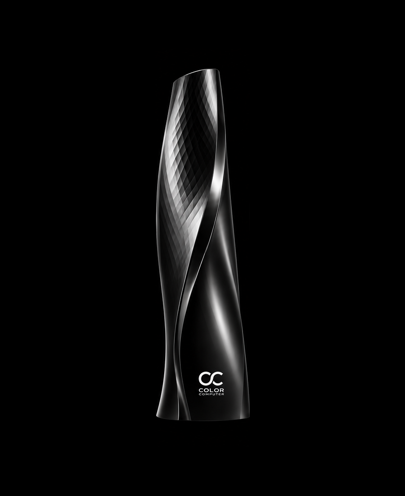

A COLEÇÃO / 001—003
Escolha sua
próxima forma.
Três designs originais. Sete acabamentos fotografados para cada modelo. Explore o que combina com seu espaço e configure seu computador.


As imagens representam os acabamentos dos produtos. Preços, dimensões, componentes, compatibilidade e disponibilidade dependem de confirmação. Não há pagamento online.